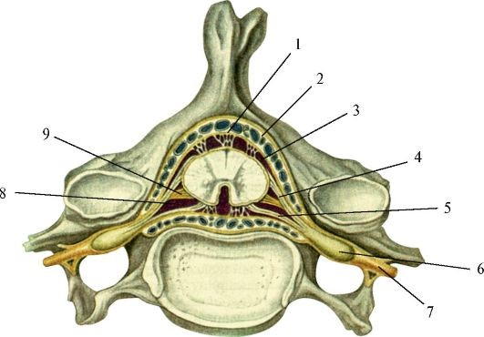

СПИННОЙ МОЗГ
Строение спинного мозга
Спинной мозг (medulla spinalis) взрослого человека – это длинный тяж почти цилиндрической формы, несколько уплощенный в переднезаднем направлении, который на уровне верхнего края первого шейного позвонка (атланта) переходит в продолговатый мозг, а внизу на уровне II поясничного позвонка оканчивается мозговым конусом. От последнего отходит терминальная нить (остаток эмбриональной нервной трубки с мозговыми оболочками), прикрепляющаяся ко II копчиковому позвонку. Спинной мозг расположен в позвоночном канале, повторяя изгибы позвоночного столба.
видео с канала Medical Lessons
По ходу спинного мозга имеются два утолщения: шейное и пояснично-крестцовое. В этих зонах число нервных клеток и волокон увеличено в связи с тем, что именно здесь берут начало нервы, иннервирующие конечности.
Спинной мозг разделен на две симметричные половины благодаря наличию передней срединной щели и задней срединной борозды. В каждой половине имеется еще по две борозды – передняя боковая борозда (выражена слабо) и задняя боковая борозда. Из передней боковой борозды выходят передние (эфферентные)корешки спинномозговых нервов, из задней - задние (афферентные) корешки. Линии выхода корешков делят каждую половину на три канатика спинного мозга (передний, боковой, задний).
Передний корешок состоит из аксонов мотонейронов, тела которых расположены в передних рогах спинного мозга. Задние корешки образованы центральными отростками чувствительных нейронов, тела которых лежат в спинальном ганглии.
Участок спинного мозга, соответствующий каждой паре корешков, называется сегментом. Сегменты обозначаются латинскими буквами С, Th, L, S и Со, указывающими область их локализации (шейную – cervicalis, грудную – thoracalis, поясничную – lumbalis, крестцовую – sacralis, копчиковую – coccygeus). Рядом с буквой ставят цифру, обозначающую номер сегмента данной области, например, Т1 – I грудной сегмент, S2 – II крестцовый сегмент.
В спинном мозге выделяют 31 сегмент и, следовательно, 31 пару спинномозговых нервов: 8 шейных, 12 грудных, 5 поясничных, 5 крестцовых и 1 копчиковый.
Спинной мозг состоит из серого вещества, расположенного внутри и окружающего его со всех сторон белого вещества (рис. 5).
Серое вещество спинного мозга образовано мультиполярными нейронами, безмиелиновыми и тонкими миелиновыми волокнами и глиоцитами. На поперечном разрезе спинного мозга серое вещество выглядит в виде фигуры летящей бабочки, в центре расположен центральный канал, заполненный спинномозговой жидкостью и выстланной одним слоем глиальных клеток – эпендимоцитов. Обе половины спинного мозга соединены между собой промежуточным центральным веществом и белой спайкой. Центральный канал вверху сообщается с IV желудочком головного мозга, внизу слепо заканчивается терминальным (конечным) желудочком.
В сером веществе различают передние и задние столбы. На протяжении от I грудного до II– III поясничного сегментов имеются еще боковые столбы. На поперечном сечении спинного мозга столбы представлены соответствующими рогами – передними, задними и в грудном отделе и на уровне двух верхних поясничных сегментов – боковыми рогами. Между передними и задними рогами находится промежуточное вещество, окружающее центральный канал.

Рис 5. Поперечный разрез спинного мозга: 1 – мягкая оболочка спинного мозга, 2 – задняя срединная борозда, 3 – задняя промежуточная борозда, 4 – задний корешок (чувствительный), 5 – задняя латеральная борозда, 6 – терминальная зона, 7 – губчатая зона, 8 – студенистое вещество, 9 – задний рог, 10 – боковой рог, 11 – зубчатая связка, 12 – передний рог, 13 – передний корешок (двигательный), 14 – передняя спинномозговая артерия, 15 – передняя срединная щель (Сапин, Билич, 1989)
Отделы спинного мозга отличаются по своему нейронному составу. Так, в задних рогах сосредоточены центральные отростки чувствительных нейронов. Тела этих нейронов лежат за пределами спинного мозга – в спинальных ганглиях. Здесь же лежат проекционные нейроны, образующие длинные восходящие пути.
В передних рогах расположены крупные (100–140 мкм в диаметре) двигательные нейроны (альфа-мотонейроны) и более мелкие (бета- и гамма-мотонейроны),образующие двигательные соматические центры.
В боковых столбах залегают группы мелких нейронов, образующие центры симпатической (боковые рога) и парасимпатической (S2-S4) части вегетативной нервной системы. Их аксоны проходят через передний рог и совместно с аксонами мотонейронов передних рогов формируют передние корешки спинномозговых нервов.
В промежуточном веществе мозга расположены вставочные нейроны (интернейроны). Их отростки не выходят за пределы спинного мозга и образуют его проводящие пути.
Белое вещество спинного мозга образовано главным образом миелиновыми волокнами, идущими продольно. Пучки нервных волокон, связывающие различные отделы нервной системы, называются проводящими путями спинного мозга. В белом веществе, располагающемся в непосредственной близости к серому, в шейном отделе между передним и задним рогами, в верхнегрудном – между задним и боковым, залегает серое вещество, образующее ретикулярную формацию.
Проводящие пути спинного мозга
Проводящие пути спинного мозга можно разделить на две большие группы – короткие и длинные. Короткие пути – связывают сегменты спинного мозга, расположенные на разных уровнях. Длинные пути – связывают спинной мозг с головным. Они в свою очередь делятся на восходящие и нисходящие. Восходящие пути передают информацию от спинного мозга к головному, нисходящие – от головного мозга к спинному. В задних канатиках располагаются только восходящие пути, в передних и боковых канатиках – и восходящие и нисходящие. Основные проводящие пути следующие.
Передний канатик содержит главным образом нисходящие пути:
- Передний корково-спинномозговой (кортикоспинальный или пирамидный) путь – двигательный, содержит отростки гигантских пирамидных клеток (клеток Беца), а также аксоны нейронов соматосенсорной коры больших полушарий. Пучок нервных волокон, образующих этот путь, лежит вблизи передней срединной щели, занимая переднемедиальные отделы переднего канатика. Волокна этого тракта переходят на противоположную сторону спинного мозга посегментно и заканчиваются на мотонейронах спинного мозга. Передний пирамидный тракт передает импульсы двигательных реакций от коры большого мозга к передним рогам спинного мозга.
- Ретикулярно-спинномозговой (ретикулоспинальный) путь. Он располагается в центральной части переднего канатика, латеральнее корково-спинномозгового пути. Этот путь образован аксонами клеток ретикулярной формации среднего мозга и моста. Волокна направляются к мотонейронам спинного мозга и обеспечивают поддержание тонуса мышц.
- Покрышечно-спинномозговой (тектоспинальный) путь связывает подкорковые центры зрения (верхние холмики крыши среднего мозга) и слуха (нижние холмики) с двигательными ядрами передних рогов спинного мозга. Он образован аксонами нейронов, лежащих в верхних и нижних холмиках. Путь расположен медиальнее переднего пирамидного тракта. Пучок этих волокон непосредственно примыкает к передней срединной щели и заканчивается на уровне шейных и верхних грудных сегментов спинного мозга. Наличие этого тракта позволяет осуществлять рефлекторные защитные движения головы и верхней части туловища при зрительных и слуховых раздражениях.
- Преддверно-спинномозговой (вестибулоспинальный) путь, расположен на границе переднего канатика с боковым. Волокна этого пути идут от вестибулярных ядер VIII пары черепных нервов (главным образом от ядра Дейтерса), расположенных в продолговатом мозге, к двигательным клеткам передних рогов спинного мозга. Осуществляет перераспределение тонуса мышц, поддерживающих равновесие.
- Передний спинно-таламический путь. Это единственный восходящий путь в переднем канатике. Он находится несколько кпереди от ретикулярно-спинномозгового пути. Тело 1-го нейрона лежит в спинальном ганглии, тело 2-го – в заднем роге спинного мозга. Его аксон переходит на противоположную сторону спинного мозга и направляется в передний канатик. Этот путь проводит импульсы тактильной чувствительности (осязание и давление).
Боковой канатик содержит следующие восходящие пути:
- Задний спинно-мозжечковый путь занимает заднелатеральные отделы бокового канатика возле задней латеральной борозды. Медиально от него лежит боковой пирамидный путь, красноядерно-спинномозговой и боковой спинно-таламическй путь. Впереди задний спинно-мозжечковый путь соприкасается с одноименным передним путем. Тело 1-го (чувствительного) нейрона лежит в спинальном ганглии. Тело 2-го нейрона - в заднем роге спинного мозга. Аксоны вторых нейронов ложатся в боковой канатик своей стороны и направляются к коре мозжечка. Задний спинно-мозжечковый путь проводит импульсы проприоцептивной чувствительности.
- Передний спинно-мозжечковый путь, также несущий прориоцептивные импульсы в мозжечок, расположен в переднелатеральных отделах бокового канатика. Впереди примыкает к передней латеральной борозде спинного мозга, граничит с оливо-спинномозговым путем. Передний спинно-мозжечковый тракт отличается от заднего тракта тем, что аксоны вторых нейронов направляются в боковой канатик противоположной стороны. Как и задний тракт, передний передает проприоцептивную информацию к коре мозжечка.
- Латеральный (боковой) спинно-таламический путь локализуется в передних отделах бокового канатика. 1-ый (чувствительный) нейрон залегает в спинальном ганглии, 2-й – в заднем роге спинного мозга. Аксон второго нейрона переходит на противоположную сторону и ложится в боковой канатик. Путь заканчивается в вентробазальном комплексе таламуса, а также в его неспецифических ядрах. Проводит импульсы болевой и температурной чувствительности.
- К нисходящим путям бокового канатика относят латеральный корково-спинномозговой (пирамидный) и экстрапирамидный красноядерно-спинномозговой проводящие пути.
- Латеральный корково-спинномозговой (пирамидный) путь. Волокна этого пути частично начинаются от гигантских пирамидных клеток, частично – от соматосенсорной коры больших полушарий. На границе между продолговатым и спинным мозгом волокна этого пути переходят на противоположную сторону, образуя перекрест пирамид. Тракт занимает значительную часть площади бокового канатика, особенно в верхних сегментах спинного мозга. Впереди этого пути находится красноядерно-спинномозговой проводящий путь. Боковой пирамидный тракт проводит двигательные импульсы от коры большого мозга к мотонейронам передних рогов спинного мозга.
- Красноядерно-спинномозговой (руброспинальный) путь расположен кпереди от латерального пирамидного пути. Он образован аксонами нейронов красного ядра среднего мозга, отчего и получил свое название. Руброспинальный путь является проводником импульсов автоматического (подсознательного) управления движениями и тонусом скелетных мышц к передним рогам спинного мозга.
Задний канатик. Здесь проходят два восходящих пучка. Непосредственно к задней продольной борозде прилежит тонкий (нежный) пучок Голля. Латеральнее его расположен клиновидный пучок Бурдаха. Toнкий пучок состоит из более длинных волокон, идущих от нижних отделов туловища и нижних конечностей соответствующей стороны к продолговатому мозгу. В него входят волокна, вступающие в состав задних корешков 19 нижних сегментов спинного мозга. Нейроны, иннервирующие верхние конечности и верхнюю часть туловища, входят в задние корешки 12 верхних сегментов спинного мозга и формируют клиновидный пучок. Тела чувствительных нейронов залегают в спинальных ганглиях, а их центральные отростки, минуя задний рог, направляются в задний канатик и поднимаются кверху к соответствующим ядрам продолговатого мозга. Здесь, в ядрах Голля и Бурдаха лежат нейроны второго порядка. Часть волокон далее переходит на противоположную сторону мозга и направляется в вентробазальный комплекс таламуса, а другая часть идет в старую и древнюю кору мозжечка. Тонкий и клиновидный пучки - это проводники проприоцептивной (суставно-мышечное чувство) и тактильной чувствительности.
видео с канала Наталья С
Оболочки спинного мозга
Спинной мозг окружен тремя оболочками мезенхимного происхождения (рис. 6). Наружная – твердая оболочка спинного мозга. За ней лежит средняя – паутинная оболочка спинного мозга, которая отделена от предыдущей субдуральным пространством. Непосредственно к спинному мозгу прилежит внутренняя мягкая оболочка спинного мозга. Внутренняя оболочка отделена от паутинной субарахноидальным пространством. В неврологии принято эти две последние, в противоположность твердой мозговой оболочке, называть мягкой оболочкой.
Рис 6. Спинной мозг и его оболочки; поперечный разрез позвоночного столба. 1 – твердая оболочка; 2 – эпидуральное пространство; 3 – паутинная оболочка; 4 – задний корешок; 5 – передний корешок; 6 – спинальные ганглии; 7 – спинномозговой нерв; 8 – подпаутинное пространство; 9 – зубчатая связка (Сапин, 1993).
Твердая оболочка спинного мозга, dura mater spindlis, представляет собой продолговатый мешок с довольно прочными и толстыми (по сравнению с другими оболочками) стенками, расположенный в позвоночном канале и содержащий спинной мозг с передними и задними корешками спинномозговых нервов и остальными оболочками. Наружная поверхность твердой мозговой оболочки отделена от надкостницы, выстилающей изнутри позвоночный канал, надоболочечным эпидуральным пространством. Последнее заполнено жировой клетчаткой и содержит внутреннее позвоночное венозное сплетение. Вверху, в области большого затылочного отверстия, твердая оболочка спинного мозга прочно срастается с краями большого затылочного отверстия и продолжается в твердую оболочку головного мозга.
Внутренняя поверхность твердой оболочки спинного мозга отделена от паутинной узким щелевидным субдуральным пространством, которое пронизано большим количеством тонких пучков соединительнотканных волокон. В верхних отделах позвоночного канала субдуральное пространство спинного мозга свободно сообщается с аналогичным пространством в полости черепа. Внизу его пространство заканчивается слепо на уровне II крестцового позвонка. Ниже пучки волокон, принадлежащие твердой оболочке спинного мозга, продолжаются в терминальную (наружную) нить.
Паутинная оболочка спинного мозга, arachnoidea mater spinalis, представляет собой тонкую пластинку, расположенную внутри от твердой оболочки. Паутинная оболочка срастается с последней возле межпозвоночных отверстий.
Мягкая (сосудистая) оболочка спинного мозга,pia mater spinalis, плотно прилежит к спинному мозгу, срастается с ним. Соединительнотканные волокна, ответвляющиеся от этой оболочки, сопровождают кровеносные сосуды и вместе с ними проникают в вещество спинного мозга. От мягкой оболочки паутинную отделяет подпаутинное пространство, заполненное спинномозговой жидкостью или ликвором.Общее количество ликвора составляет около 120–140 мл. В нижних отделах подпаутинное пространство содержит окруженные спинномозговой жидкостью корешки спинномозговых нервов.
В верхних отделах подпаутинное пространство спинного мозга продолжается в подпаутинное пространство головного мозга. Подпаутинное пространство содержит многочисленные соединительнотканные пучки и пластинки, соединяющие паутинную оболочку с мягкой и со спинным мозгом. От боковых поверхностей спинного мозга (от покрывающей его мягкой оболочки), между передними и задними корешками, вправо и влево к паутинной оболочке отходит тонкая прочная пластинка – зубчатая связка. Связка имеет сплошное начало от мягкой оболочки, а в латеральном направлении разделяется на зубцы (в количестве 20–30), которые срастаются не только с паутинной, но и с твердой оболочкой спинного мозга.
Во внутриутробном периоде спинной мозг вначале заполняет весь позвоночный канал. Начиная с третьего месяца, позвоночник растет в длину быстрее, чем спинной мозг, часть канала остается незаполненной, свободной. Длина спинного мозга новорожденного 13,6–14,8 см. До 10-летнего возраста длина его удваивается. У новорожденного спинной мозг достигает нижнего края IIII поясничного позвонка, у взрослого на один позвонок выше, длина его в среднем 42–43 см, масса 34–38 г. В полости позвоночного столба он занимает примерно 2/3 объема.